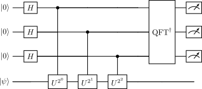

4 Quantum Computing Algorithms
We now have a solid foundation in the building blocks of quantum computing. We understand how individual qubits work - their quantum states, how they evolve under unitary operations, and how we measure them. We’ve also explored how multiple qubits interact and become entangled, creating quantum correlations that have no classical analog.
With these fundamental tools in hand, we can now explore what makes quantum computing truly powerful - the algorithms that harness quantum mechanics to solve problems more efficiently than classical computers. These algorithms cleverly combine quantum superposition, interference, and entanglement to achieve computational speedups that would be impossible using classical bits alone.
The key insight is that quantum algorithms can process multiple computational paths simultaneously through superposition, while entanglement allows us to correlate these paths in useful ways. When we finally measure the system, quantum interference helps guide us toward the solution we seek. In the following sections, we’ll examine several landmark quantum algorithms that demonstrate these principles and show how quantum computers can tackle important practical problems.
Scott Aaronson famously wrote on his blog: “If you take nothing else from this blog: quantum computers won’t solve hard problems instantly by just trying all solutions in parallel.”
This gets at a crucial misconception about quantum computing. While quantum computers can indeed explore multiple computational paths simultaneously through superposition, we can’t simply read out all those paths at the end. When we measure a quantum system, it collapses to just one classical outcome. The art of quantum algorithm design lies in cleverly using interference to amplify the paths leading to the solution we want, while suppressing paths leading to incorrect answers. This is why quantum algorithms require careful construction - we need to choreograph the quantum evolution so that when we finally measure, we’re likely to get useful information.
4.1 Deutsch’s Algorithm
Deutsch’s algorithm, published in 1985 [1], represents the first quantum algorithm to demonstrate a speedup over classical computation. While the problem it solves is quite simple, it beautifully illustrates the key principles of quantum computation: superposition, interference, and parallelism.
4.1.1 The Problem Statement
Consider a black box (oracle) function \(f: \{0,1\} \rightarrow \{0,1\}\) that takes a single bit as input and returns a single bit as output. There are only four possible such functions:
- \(f_1(x) = 0\) for all \(x\) (constant function)
- \(f_2(x) = 1\) for all \(x\) (constant function)
- \(f_3(x) = x\) (balanced function)
- \(f_4(x) = \text{NOT}(x)\) (balanced function)
The task is to determine whether \(f\) is constant (same output for all inputs) or balanced (equal number of 0s and 1s in output). Classically, this requires evaluating \(f(0)\) and \(f(1)\) - two function calls. Deutsch’s algorithm solves this problem with a single quantum query.
An oracle is a black box function that implements a specific operation without revealing its internal workings. In quantum computing, an oracle is typically provided as a unitary transformation that can be queried but whose implementation details are hidden. Oracles are crucial in algorithm analysis because they let us:
- Focus on the number of queries needed rather than implementation details
- Prove lower bounds on algorithmic complexity
- Compare classical and quantum approaches on an equal footing
For example, in Deutsch’s algorithm, we don’t care how \(f(x)\) is computed internally - we just care that we can access it as a quantum operation \(U_f\) that preserves quantum superposition.
4.1.2 Quantum Implementation
The Hadamard transform is crucial in this algorithm because:
Initial H-gates create a superposition of all possible bit strings: \[H^{\otimes n}\ket{0}^{\otimes n} = \frac{1}{\sqrt{2^n}}\sum_{x\in\{0,1\}^n}\ket{x}\]
Final H-gates convert phase differences into bit values:
- If a bit in s is 0: H maps \(\ket{0} \rightarrow \ket{0}\)
- If a bit in s is 1: H maps \(-\ket{0} \rightarrow \ket{1}\)
This is why measuring after the final Hadamard gates directly reveals the hidden string s!
The quantum circuit requires two qubits:
- An input qubit initialized to \(\ket{0}\)
- An auxiliary qubit initialized to \(\ket{1}\)
The algorithm proceeds as follows:
Apply Hadamard gates to both qubits: \[\ket{0}\ket{1} \xrightarrow{H \otimes H} \frac{1}{\sqrt{2}}(\ket{0}+\ket{1})\otimes\frac{1}{\sqrt{2}}(\ket{0}-\ket{1})\]
Apply the quantum oracle \(U_f\), which implements: \[\ket{x}\ket{y} \rightarrow \ket{x}\ket{y \oplus f(x)}\] where \(\oplus\) denotes addition modulo 2.
Apply another Hadamard gate to the first qubit.
Measure the first qubit.
The interference in Deutsch’s algorithm occurs in the final Hadamard transformation. To see this explicitly, let’s track how the phases accumulate:
Phase kickback is a phenomenon in quantum computing where the phase shift caused by an operation on one qubit (often called the target qubit) is “kicked back” onto another qubit (often called the control qubit). This happens particularly in controlled operations when the target qubit is in an eigenstate of the operation.
In Deutsch’s algorithm, we have four possibilities in the code basis
- \(\ket{0}\ket{y} \mapsto \ket{0}\ket{y+0}\) and \(\ket{1}\ket{y}\mapsto\ket{1}\ket{y+0}\). In this case, nothing changes and \[ \ket{+}\ket{-} \mapsto \ket{+}\ket{-}. \]
- \(\ket{0}\ket{y} \mapsto \ket{0}\ket{y+1}\) and \(\ket{1}\ket{y}\mapsto\ket{1}\ket{y+1}\). In this case, both basis states get a phase kickback, and \[ \ket{+}\ket{-} \mapsto -\ket{+}\ket{-}. \] Yet an overall phase does not affect the state.
- \(\ket{0}\ket{y} \mapsto \ket{0}\ket{y+0}\) and \(\ket{1}\ket{y}\mapsto\ket{1}\ket{y+1}\). In this case, only the \(\ket{1}\) basis state gets a phase kickback, and \[ \ket{+}\ket{-} \mapsto \ket{0}\ket{-} - \ket{1}\ket{-} = \ket{-}\ket{-}. \]
- \(\ket{0}\ket{y} \mapsto \ket{0}\ket{y+1}\) and \(\ket{1}\ket{y}\mapsto\ket{1}\ket{y+0}\). In this case, only the \(\ket{0}\) basis state gets a phase kickback, and \[ \ket{+}\ket{-} \mapsto -\ket{0}\ket{-} + \ket{1}\ket{-} = -\ket{-}\ket{-}. \]
Even though the extra qubit is not changed by the oracle, it provides an important function with its \(-1\) phase, allowing it to change the phase of other qubits from \(\ket{+}\) to \(\ket{-}\) in a strategic way to allow interference.
Generically, when \(U_f\) acts on \(\ket{x}\ket{-}\), it transforms the state as follows:
\[ U_f \ket{x}\ket{-} = (-1)^{f(x)} \ket{x} \ket{-} \]
The phase factor \((-1)^{f(x)}\) appears on the input qubit \(\ket{x}\). This phase encodes whether \(f(x)\) is 0 or 1. This is how the global properties of f are transferred to the first qubit.
After the oracle \(U_f\) acts on the state \(\frac{1}{\sqrt{2}}(\ket{0}+\ket{1})\otimes\frac{1}{\sqrt{2}}(\ket{0}-\ket{1})\), the first qubit (ignoring the auxiliary qubit, which remains in the state \(\ket{-} = \frac{1}{\sqrt{2}}(\ket{0}-\ket{1})\)), becomes:
\[ \frac{1}{\sqrt{2}} \left[ (-1)^{f(0)}\ket{0} + (-1)^{f(1)}\ket{1} \right] \]
The key here is that the function values \(f(0)\) and \(f(1)\) are now encoded as phases in front of the basis states \(\ket{0}\) and \(\ket{1}\) (this is phase kickback, see above callout box). Let’s consider the two possibilities for \(f(x)\): constant or balanced.
Constant Functions: If \(f(x)\) is constant, then \(f(0) = f(1)\). The state is then either \(\pm \frac{1}{\sqrt{2}}(\ket{0} + \ket{1})\), depending on whether \(f(x) = 0\) or \(f(x) = 1\).
Balanced Functions: If \(f(x)\) is balanced, then \(f(0) \neq f(1)\). This means one of the function values is 0 and the other is 1. The state is then either \(\pm \frac{1}{\sqrt{2}}(\ket{0} - \ket{1})\).
Now we apply the final Hadamard gate to the first qubit. Recall that \(H\) transforms the basis states as:
\[ H\ket{0} = \frac{1}{\sqrt{2}}(\ket{0} + \ket{1}) \]
\[ H\ket{1} = \frac{1}{\sqrt{2}}(\ket{0} - \ket{1}) \]
Applying the Hadamard gate \(H\) to the first qubit transforms the state based on whether \(f(x)\) is constant or balanced:
Constant Functions: If \(f(0) = f(1) = c\), the state before the Hadamard gate is \(\frac{(-1)^c}{\sqrt{2}}(\ket{0} + \ket{1})\). Applying \(H\) yields:
\[ H\left[\frac{(-1)^c}{\sqrt{2}}(\ket{0} + \ket{1})\right] = (-1)^c\ket{0} \] Therefore, we always measure \(\ket{0}\).
Balanced Functions: If \(f(0) \neq f(1)\), the state before the Hadamard gate is \(\pm\frac{1}{\sqrt{2}}(\ket{0} - \ket{1})\). Applying \(H\) yields:
\[ H\left[\pm\frac{1}{\sqrt{2}}(\ket{0} - \ket{1})\right] = \pm\ket{1} \] Therefore, we always measure \(\ket{1}\).
The final Hadamard gate creates an interference effect, channeling the global property of \(f\) (constant or balanced) into a single, easily measurable property of the first qubit.
In summary, if \(f\) is constant, the final state of the first qubit will be \(\ket{0}\). If \(f\) is balanced, the final state will be \(\ket{1}\).
4.1.3 Key Insights
Several quantum principles make this speedup possible:
Superposition: The initial Hadamard transforms create a superposition that allows us to evaluate \(f(0)\) and \(f(1)\) simultaneously.
Phase Kickback: The auxiliary qubit, initialized to \(\ket{1}\) and transformed by Hadamard, enables the function’s output to be encoded in the phase of the first qubit.
Interference: The final Hadamard transform converts the phase difference into a measurable bit value.
Deutsch’s algorithm was the first to demonstrate that quantum computers could solve certain problems faster than classical computers. While the problem itself is artificial, the techniques it introduced - particularly the use of quantum parallelism and interference - became fundamental building blocks for more practical quantum algorithms.
Consider a single-bit function \(f(x)\). There are only four possible functions:
Constant Functions:
- \(f_1(x) = 0\) for all \(x\)
- \(f_2(x) = 1\) for all \(x\)
Balanced Functions:
- \(f_3(x) = x\) (identity)
- \(f_4(x) = \text{NOT}(x)\)
The quantum algorithm can distinguish between these cases with just one query, while classically we need two queries to be certain!
4.1.4 Mathematical Details
Let’s examine how the state evolves through the circuit. After the initial Hadamard gates, we have:
\[\frac{1}{2}(\ket{0}+\ket{1})(\ket{0}-\ket{1})\]
After applying \(U_f\), the state becomes:
\[\frac{1}{2}[(-1)^{f(0)}\ket{0}+(-1)^{f(1)}\ket{1}](\ket{0}-\ket{1})\]
The final Hadamard on the first qubit gives:
\[\frac{1}{2}[(-1)^{f(0)}+(-1)^{f(1)}]\ket{0} + \frac{1}{2}[(-1)^{f(0)}-(-1)^{f(1)}]\ket{1}\]
For constant functions, \(f(0)=f(1)\), leading to a measurement of \(\ket{0}\). For balanced functions, \(f(0)\neq f(1)\), leading to a measurement of \(\ket{1}\).
This elegant algorithm demonstrates how quantum interference can extract global properties of a function (constant vs. balanced) with fewer queries than classically possible.
4.2 Deutsch–Jozsa Algorithm
The Deutsch-Jozsa algorithm, published in 1992 [2], generalizes Deutsch’s algorithm to handle functions with n-bit inputs. It provides one of the first examples of an exponential speedup over classical deterministic algorithms, though for a somewhat artificial problem.
4.2.1 The Problem Statement
Consider a black box function \(f: \{0,1\}^n \rightarrow \{0,1\}\) that takes n bits as input and returns a single bit. We are promised that \(f\) is either:
- Constant: returns the same value (0 or 1) for all inputs
- Balanced: returns 0 for exactly half of the inputs and 1 for the other half
The task is to determine whether \(f\) is constant or balanced.
Classically, in the worst case, we need to evaluate \(f(x)\) for \(2^{n-1} + 1\) different inputs to be certain of the answer. This is because we might need to check more than half the possible inputs before finding two different outputs. The Deutsch-Jozsa algorithm solves this problem with just one quantum query!
4.2.2 Quantum Implementation
The quantum circuit requires:
- n qubits for the input register, initialized to \(\ket{0}^{\otimes n}\)
- One auxiliary qubit initialized to \(\ket{1}\)
The Deutsch-Jozsa algorithm can be summarized as follows:
- Apply Hadamard gates to all input qubits and the auxiliary qubit.
- Apply the quantum oracle \(U_f\).
- Apply Hadamard gates to the input qubits.
- Measure the input qubits.
To understand the algorithm more deeply, let’s analyze each step mathematically.
4.2.3 Mathematical Analysis
Initialization and Hadamard Transform:
We begin with the state \(\ket{0}^{\otimes n}\ket{1}\). Applying Hadamard gates to all \(n+1\) qubits transforms the state as follows:
\[\ket{0}^{\otimes n}\ket{1} \xrightarrow{H^{\otimes (n+1)}} \frac{1}{\sqrt{2^n}}\sum_{x\in\{0,1\}^n}\ket{x}\otimes\frac{1}{\sqrt{2}}(\ket{0}-\ket{1})\]
Application of the Quantum Oracle:
The quantum oracle \(U_f\) is applied, which implements the transformation:
\[\ket{x}\ket{y} \rightarrow \ket{x}\ket{y \oplus f(x)}\]
This transforms the state to:
\[ \frac{1}{\sqrt{2^n}}\sum_{x\in\{0,1\}^n}\ket{x}\otimes\frac{1}{\sqrt{2}}(\ket{f(x)}-\ket{\overline{f(x)}}) \]
where \(\overline{f(x)}\) represents the complement of \(f(x)\). This can be rewritten via phase kickback as:
\[ \frac{1}{\sqrt{2^n}}\sum_{x\in\{0,1\}^n}(-1)^{f(x)}\ket{x}\otimes\frac{1}{\sqrt{2}}(\ket{0}-\ket{1}) \]
Final Hadamard Transform:
Hadamard gates are applied to the \(n\) input qubits. To see the effect, we apply the Hadamard transform to each qubit. Recall that \(H\ket{x} = \frac{1}{\sqrt{2}}\sum_{z \in \{0,1\}} (-1)^{x \cdot z} \ket{z}\). Applying this to all \(n\) qubits, we get:
\[ H^{\otimes n} \ket{x} = \frac{1}{\sqrt{2^n}} \sum_{z \in \{0,1\}^n} (-1)^{x \cdot z} \ket{z} \]
where \(x \cdot z = x_1z_1 \oplus x_2z_2 \oplus \dots \oplus x_nz_n\). Therefore, the state becomes:
\[ \frac{1}{\sqrt{2^n}}\sum_{x\in\{0,1\}^n} (-1)^{f(x)} \left( \frac{1}{\sqrt{2^n}} \sum_{z \in \{0,1\}^n} (-1)^{x \cdot z} \ket{z} \right) \otimes \frac{1}{\sqrt{2}}(\ket{0}-\ket{1}) \]
Rearranging the summation, we have:
\[ \frac{1}{2^n}\sum_{z\in\{0,1\}^n} \left( \sum_{x\in\{0,1\}^n} (-1)^{f(x) + x \cdot z} \right) \ket{z} \otimes \frac{1}{\sqrt{2}}(\ket{0}-\ket{1}) \]
Constant Function Case:
If \(f(x)\) is a constant function, meaning \(f(x) = c\) for all \(x\), the state simplifies to:
\[ \pm \ket{0}^{\otimes n}\otimes\frac{1}{\sqrt{2}}(\ket{0}-\ket{1}) \]
The sign depends on the value of \(c\). Measuring the first \(n\) qubits will yield \(\ket{0}^{\otimes n}\) with certainty.
Balanced Function Case:
If \(f(x)\) is a balanced function, the interference is such that the amplitude of the \(\ket{0}^{\otimes n}\) state becomes zero. Therefore, when measuring the first \(n\) qubits, the probability of obtaining \(\ket{0}^{\otimes n}\) is 0. This means we are guaranteed to measure a state other than \(\ket{0}^{\otimes n}\).
Measurement:
Finally, we measure the \(n\) input qubits. If the measurement result is \(\ket{0}^{\otimes n}\), the function is constant. Otherwise, if any of the qubits are measured to be \(\ket{1}\), the function is balanced.
Applying a Hadamard gate to each qubit in the \(\ket{0}^{\otimes n}\) state creates a superposition of all possible \(n\)-bit strings. This is because:
\[ \begin{aligned} H^{\otimes n}\ket{0}^{\otimes n} & = H\ket{0} \otimes H\ket{0} \otimes \dots \otimes H\ket{0} \\ & = \ket{+}^{\otimes n} \\ & = \frac{1}{\sqrt{2^n}}\sum_{x\in\{0,1\}^n}\ket{x} \end{aligned} \]
Each qubit is in an equal superposition of \(\ket{0}\) and \(\ket{1}\), and since the qubits are independent, the overall state is a superposition of all \(2^n\) possible combinations of \(\ket{0}\) and \(\ket{1}\).
For \(n=1\):
\[H\ket{0} = \frac{\ket{0} + \ket{1}}{\sqrt{2}} = \frac{1}{\sqrt{2}}\sum_{x\in\{0,1\}}\ket{x}\]
For \(n=2\):
\[ \begin{aligned} H^{\otimes 2}\ket{00} & = H\ket{0} \otimes H\ket{0} \\ & = \frac{\ket{0} + \ket{1}}{\sqrt{2}} \otimes \frac{\ket{0} + \ket{1}}{\sqrt{2}} \\ & = \frac{\ket{00} + \ket{01} + \ket{10} + \ket{11}}{2} \\ & = \frac{1}{2}\sum_{x\in\{0,1\}^2}\ket{x} \end{aligned} \]
For \(n=3\):
\[ \begin{aligned} H^{\otimes 3}\ket{000} & = H\ket{0} \otimes H\ket{0} \otimes H\ket{0} \\ & = \frac{\ket{0} + \ket{1}}{\sqrt{2}} \otimes \frac{\ket{0} + \ket{1}}{\sqrt{2}} \otimes \frac{\ket{0} + \ket{1}}{\sqrt{2}} \\ & = \frac{\ket{000} + \ket{001} + \ket{010} + \ket{011}}{2\sqrt{2}} \\ & \;\;\; + \frac{\ket{100} + \ket{101} + \ket{110} + \ket{111}}{2\sqrt{2}} \\ & = \frac{1}{2\sqrt{2}}\sum_{x\in\{0,1\}^3}\ket{x} \end{aligned} \]
The amplitude of the \(\ket{0}^{\otimes n}\) state after the final Hadamard transform is given by:
\[ \frac{1}{2^n}\sum_{x\in\{0,1\}^n}(-1)^{f(x)} \]
This sum evaluates to:
- \(\pm 1\) if \(f(x)\) is a constant function.
- \(0\) if \(f(x)\) is a balanced function.
If the sum is \(\pm 1\), this means that the amplitude of the \(\ket{0}^{\otimes n}\) state is non-zero, and when we measure the qubits, we will obtain the \(\ket{0}^{\otimes n}\) state with certainty (or its opposite, depending on the sign). Conversely, if the sum is \(0\), the amplitude of the \(\ket{0}^{\otimes n}\) state is zero, meaning that when we measure the qubits, we are guaranteed not to obtain the \(\ket{0}^{\otimes n}\) state. This implies that at least one of the qubits must be in the \(\ket{1}\) state.
The unitary operator \(U_f\) performs: \[\ket{x}\ket{y} \rightarrow \ket{x}\ket{y \oplus f(x)}\]
When applied to a superposition of all possible inputs: \[\frac{1}{\sqrt{2^n}}\sum_{x}\ket{x}\ket{-} \rightarrow \frac{1}{\sqrt{2^n}}\sum_{x} (-1)^{f(x)}\ket{x}\ket{-}\]
This single operation effectively computes \(f(x)\) for all \(2^n\) inputs simultaneously! This is a key feature of quantum computation.
4.2.4 Key Insights
Quantum Parallelism: The algorithm processes all possible inputs simultaneously through superposition.
Interference: The final Hadamard transforms create interference patterns that distinguish between constant and balanced functions.
Promise Problem: The algorithm’s exponential speedup relies crucially on the promise that \(f\) is either constant or balanced. Without this promise, the quantum advantage disappears.
For n=2, the classical algorithm needs to evaluate \(f(00)\), \(f(01)\), and possibly \(f(10)\) to determine if \(f\) is constant or balanced. The quantum algorithm still requires just one query regardless of n.
Consider a balanced function \(f(00)=f(01)=0\) and \(f(10)=f(11)=1\):
- Initial state after Hadamards: \(\frac{1}{2}(\ket{00}+\ket{01}+\ket{10}+\ket{11})(\ket{0}-\ket{1})\)
- After oracle: \(\frac{1}{2}(\ket{00}+\ket{01}-\ket{10}-\ket{11})(\ket{0}-\ket{1})\)
- Final state after Hadamards: \(\ket{\psi}\otimes\frac{1}{\sqrt{2}}(\ket{0}-\ket{1})\) where \(\ket{\psi}\) has zero amplitude for \(\ket{00}\): \[ \ket{\psi} = \frac{1}{2}(\ket{00}+\ket{01}-\ket{10}-\ket{11}) \] \[ H^{\otimes 2}\ket{\psi} = \ket{10} \]
The Deutsch-Jozsa algorithm, while solving an artificial problem, demonstrates the potential power of quantum computation and introduces techniques that appear in many more practical quantum algorithms.
4.3 Bernstein–Vazirani Algorithm
Building upon the Deutsch and Deutsch-Jozsa algorithms, the Bernstein-Vazirani algorithm [3] tackles a different problem: instead of determining a global property of a function (like whether it’s constant or balanced), it aims to learn a hidden string encoded within the function’s behavior. While the Deutsch-Jozsa algorithm distinguishes between constant and balanced functions, the Bernstein-Vazirani algorithm identifies a specific string \(s\) that defines the function \(f(x) = s \cdot x \pmod{2}\). This algorithm showcases how quantum computation can be used to extract specific information from a function with just a single query, offering an exponential speedup compared to classical approaches.
4.3.1 Problem Statement
The Bernstein-Vazirani algorithm is designed to solve the following problem:
Given a hidden string \(s \in \{0, 1\}^n\), and a function \(f: \{0, 1\}^n \rightarrow \{0, 1\}\) such that \(f(x) = s \cdot x \pmod{2}\), where \(s \cdot x\) is the bitwise dot product of \(s\) and \(x\), the goal is to find the hidden string \(s\).
Classically, determining \(s\) requires \(n\) queries to the function \(f\). The Bernstein-Vazirani algorithm can find \(s\) with just one quantum query.
4.3.2 Quantum Implementation
The quantum circuit consists of:
- \(n\) input qubits initialized to \(\ket{0}^{\otimes n}\)
- One auxiliary qubit initialized to \(\ket{1}\)
The algorithm proceeds as follows:
- Apply Hadamard gates to all \(n\) input qubits and the auxiliary qubit.
- Apply the quantum oracle \(U_f\), defined as \(\ket{x}\ket{y} \rightarrow \ket{x}\ket{y \oplus f(x)}\).
- Apply Hadamard gates to the \(n\) input qubits.
- Measure the \(n\) input qubits. The measurement outcome will be the hidden string \(s\).
4.3.3 Step-by-step state evolution with Hadamard gates
Let’s break down how the quantum state evolves as Hadamard gates are applied. This will give you a clearer picture of how the algorithm works.
Initialization: We start with \(n\) qubits in the \(\ket{0}\) state and one auxiliary qubit in the \(\ket{1}\) state: \[ \ket{\psi_0} = \ket{0}^{\otimes n} \ket{1} = \ket{00...0}\otimes \ket{1} \]
Applying Hadamards: We apply Hadamard gates to all \(n+1\) qubits. Recall that the Hadamard gate transforms \(\ket{0}\) to \(\frac{1}{\sqrt{2}}(\ket{0} + \ket{1})\) and \(\ket{1}\) to \(\frac{1}{\sqrt{2}}(\ket{0} - \ket{1})\). Applying \(H^{\otimes n}\) to the first \(n\) qubits transforms \(\ket{0}^{\otimes n}\) into an equal superposition of all possible \(n\)-bit strings: \[ H^{\otimes n}\ket{0}^{\otimes n} = \frac{1}{\sqrt{2^n}} \sum_{x \in \{0, 1\}^n} \ket{x} \] Applying a Hadamard gate to the auxiliary qubit transforms \(\ket{1}\) to \(\frac{1}{\sqrt{2}}(\ket{0} - \ket{1})\). Therefore, after applying the Hadamard gates, the state becomes: \[ \begin{aligned} \ket{\psi_1} &= \frac{1}{\sqrt{2^n}} \sum_{x \in \{0, 1\}^n} \ket{x} \otimes \frac{1}{\sqrt{2}}(\ket{0} - \ket{1}) \\ &= \frac{1}{\sqrt{2^{n+1}}} \sum_{x \in \{0, 1\}^n} \ket{x}(\ket{0} - \ket{1}) \end{aligned} \]
Applying the Quantum Oracle: The quantum oracle \(U_f\) acts as \(\ket{x}\ket{y} \rightarrow \ket{x}\ket{y \oplus f(x)}\). Applying \(U_f\) to \(\ket{\psi_1}\) gives: \[ \ket{\psi_2} = \frac{1}{\sqrt{2^{n+1}}} \sum_{x \in \{0, 1\}^n} \ket{x}\ket{f(x) \oplus 1} \] Since \(f(x) = s \cdot x \pmod{2}\), we can rewrite this as: \[ \ket{\psi_2} = \frac{1}{\sqrt{2^{n+1}}} \sum_{x \in \{0, 1\}^n} \ket{x}\ket{s \cdot x \oplus 1} \] We can rewrite \(\ket{s \cdot x \oplus 1}\) as \((-1)^{s \cdot x}\ket{1}\), so the state becomes: \[ \ket{\psi_2} = \frac{1}{\sqrt{2^{n+1}}} \sum_{x \in \{0, 1\}^n} (-1)^{s \cdot x}\ket{x}(\ket{0} - \ket{1}) \tag{4.1}\]
Applying Hadamards Again: We apply Hadamard gates to the first \(n\) qubits again. Let’s consider what happens if we apply \(H^{\otimes n}\) to the state \(\ket{s}\). \[ H^{\otimes n}\ket{s} = \frac{1}{\sqrt{2^n}} \sum_{y \in \{0, 1\}^n} (-1)^{s \cdot y} \ket{y} \] Notice that this is Eq. 4.1, and since \(H^2 = I\), we can invert this to see that \[ \ket{s} \otimes \ket{-}= \frac{1}{\sqrt{2^n}} H^{\otimes n}\sum_{x \in \{0, 1\}^n} (-1)^{s \cdot x} \ket{x} \ket{-} \]
Measurement: Measuring the first \(n\) qubits yields the hidden string \(s\) with certainty. The auxiliary qubit is left in the state \(\frac{1}{\sqrt{2}}(\ket{0} - \ket{1})\), which we can ignore after the measurement.
In summary, the algorithm cleverly uses Hadamard gates and the quantum oracle to transform the initial state into a state where measuring the first \(n\) qubits directly reveals the hidden string \(s\). The key is the interference caused by the Hadamard gates and the phase kickback from the oracle, which amplifies the amplitude of the state corresponding to the hidden string.
The Bernstein-Vazirani algorithm showcases a significant speedup for this specific problem compared to its classical counterpart. Classically, determining the hidden string \(s\) would require \(n\) queries to the function \(f(x)\), while the quantum algorithm achieves the same result with just a single query to the quantum oracle \(U_f\). This demonstrates an exponential speedup highlighting the power of quantum computation for specific tasks.
4.3.4 Connection to Deutsch-Jozsa Algorithm
The Bernstein-Vazirani algorithm can be seen as a generalization of the Deutsch-Jozsa algorithm. While Deutsch-Jozsa distinguishes between constant and balanced functions, Bernstein-Vazirani identifies a specific hidden string. If we consider the Deutsch-Jozsa problem as determining whether the dot product \(s \cdot x\) is always 0 (constant function) or not (balanced function), Bernstein-Vazirani extends this to find the specific string \(s\) that defines this dot product. Both algorithms leverage the power of quantum parallelism and interference to achieve an exponential speedup over classical algorithms for specific problems related to function evaluation.
4.4 Simon’s Algorithm
Simon’s algorithm, introduced by Daniel Simon in 1994 [4], solves a problem that exhibits an exponential speedup over the best-known classical algorithm. It distinguishes itself as one of the early quantum algorithms demonstrating a significant advantage, albeit for a specific problem.
4.4.1 Problem Statement
Consider a function \(f: \{0, 1\}^n \rightarrow \{0, 1\}^n\) with the following promise:
- There exists a secret string \(s \in \{0, 1\}^n\) such that for all \(x, y \in \{0, 1\}^n\), \(f(x) = f(y)\) if and only if \(x \oplus y = 0^n\) or \(x \oplus y = s\), where \(\oplus\) denotes bitwise XOR.
In simpler terms, \(f\) is two-to-one, and it maps \(x\) and \(x \oplus s\) to the same value. The goal is to find the hidden string \(s\).
Classically, solving this problem requires \(O(2^{n/2})\) queries to \(f\) using a collision-finding algorithm. Simon’s algorithm solves it in polynomial time with \(O(n)\) queries.
4.4.2 Quantum Implementation
The quantum circuit for Simon’s algorithm involves the following steps:
Initialization: Start with two registers of \(n\) qubits each, both initialized to \(\ket{0}^{\otimes n}\).
\[ \ket{\psi_0} = \ket{0}^{\otimes n} \ket{0}^{\otimes n} \]
Superposition: Apply a Hadamard gate to each qubit in the first register. This creates an equal superposition of all possible \(n\)-bit strings.
\[ \ket{\psi_1} = \frac{1}{\sqrt{2^n}} \sum_{x \in \{0, 1\}^n} \ket{x} \ket{0}^{\otimes n} \]
Query the Oracle: Apply the quantum oracle \(U_f\) that implements the function \(f\): \(\ket{x}\ket{y} \rightarrow \ket{x}\ket{y \oplus f(x)}\).
\[ \ket{\psi_2} = \frac{1}{\sqrt{2^n}} \sum_{x \in \{0, 1\}^n} \ket{x} \ket{f(x)} \]
Measure the Second Register: Measure the second register. This yields a value \(f(x_0)\) for some \(x_0 \in \{0, 1\}^n\). Due to the property of \(f\), we know that \(f(x_0) = f(x_0 \oplus s)\). Therefore, the first register collapses to an equal superposition of \(\ket{x_0}\) and \(\ket{x_0 \oplus s}\):
\[ \ket{\psi_3} = \frac{1}{\sqrt{2}} (\ket{x_0} + \ket{x_0 \oplus s}) \ket{f(x_0)} \]
We can ignore the second register from now on, as it is no longer needed. Consider only the first register, which is now in the state:
\[ \ket{\psi_3'} = \frac{1}{\sqrt{2}} (\ket{x_0} + \ket{x_0 \oplus s}) \]
Apply Hadamard Transform: Apply a Hadamard gate to each qubit in the first register.
\[ \ket{\psi_4} = H^{\otimes n} \left[ \frac{1}{\sqrt{2}} (\ket{x_0} + \ket{x_0 \oplus s}) \right] \]
Recall that \(H^{\otimes n} \ket{x} = \frac{1}{\sqrt{2^n}} \sum_{y \in \{0, 1\}^n} (-1)^{x \cdot y} \ket{y}\). Therefore:
\[ \ket{\psi_4} = \frac{1}{\sqrt{2^{n+1}}} \sum_{y \in \{0, 1\}^n} \left[ (-1)^{x_0 \cdot y} + (-1)^{(x_0 \oplus s) \cdot y} \right] \ket{y} \]
Simplifying the exponent, we have \((x_0 \oplus s) \cdot y = (x_0 \cdot y) \oplus (s \cdot y)\). Thus:
\[ \ket{\psi_4} = \frac{1}{\sqrt{2^{n+1}}} \sum_{y \in \{0, 1\}^n} (-1)^{x_0 \cdot y} \left[ 1 + (-1)^{s \cdot y} \right] \ket{y} \]
Notice that if \(s \cdot y = 1\), then the term in the brackets becomes \(1 + (-1) = 0\). Therefore, we only get non-zero amplitudes for \(y\) such that \(s \cdot y = 0\).
Measure the First Register: Measure the first register. The measurement outcome \(y\) will satisfy the equation \(s \cdot y = 0 \pmod{2}\).
Repeat: Repeat steps 2-6 \(O(n)\) times to obtain \(n-1\) linearly independent equations of the form \(s \cdot y_i = 0 \pmod{2}\).
Solve the System of Equations: Solve the system of linear equations to find the hidden string \(s\). This can be done efficiently using classical Gaussian elimination.
Simon’s algorithm cleverly exploits the function’s special property: \(f(x) = f(x \oplus s)\).
- Superposition: The initial Hadamard gates create a superposition of all possible inputs: \[\frac{1}{\sqrt{2^n}}\sum_{x\in\{0,1\}^n}\ket{x}\]
- Oracle’s Role: The oracle maps each input to its corresponding output: \[\frac{1}{\sqrt{2^n}}\sum_{x\in\{0,1\}^n}\ket{x}\ket{f(x)}\]
- The Magic: Because \(f(x) = f(x \oplus s)\), measuring the second register (the output) entangles pairs of inputs (\(x\) and \(x \oplus s\)) that produce the same output. This entanglement creates a special interference pattern in the first register that, after more steps, allows us to extract the hidden string \(s\).
4.4.3 Quantum Speedup
Simon’s algorithm provides an exponential speedup over classical algorithms for finding the hidden string \(s\). The classical algorithm requires \(O(2^{n/2})\) queries, while Simon’s algorithm requires only \(O(n)\) quantum queries and polynomial classical post-processing. This demonstrates the potential of quantum computers to solve certain problems much more efficiently than their classical counterparts.
4.5 Quantum Phase Estimation
Quantum Phase Estimation (QPE) is a crucial quantum algorithm used to estimate the eigenvalue (or phase) of an eigenvector of a unitary operator. It serves as a building block for many other quantum algorithms, including Shor’s algorithm for factoring and algorithms for simulating quantum systems.
4.5.1 Problem Statement
Given a unitary operator \(U\) and an eigenstate \(\ket{\psi}\) such that \(U\ket{\psi} = e^{2\pi i \theta} \ket{\psi}\), the goal of QPE is to estimate the value of \(\theta\). Here, \(\theta\) is the phase we want to estimate, and it lies in the range \([0, 1)\).
4.5.2 Quantum Implementation

The QPE algorithm uses two registers:
- The Control Register: This register consists of \(t\) qubits, initialized to \(\ket{0}^{\otimes t}\). The number of qubits \(t\) determines the precision of the phase estimation.
- The Eigenstate Register: This register holds the eigenstate \(\ket{\psi}\) of the unitary operator \(U\).
The algorithm proceeds as follows:
Initialization: Prepare the control register in the state \(\ket{0}^{\otimes t}\) and the eigenstate register in the state \(\ket{\psi}\).
\[ \ket{\psi_0} = \ket{0}^{\otimes t} \ket{\psi} \]
Superposition: Apply a Hadamard gate to each qubit in the control register to create an equal superposition.
\[ \ket{\psi_1} = \frac{1}{\sqrt{2^t}} \sum_{x=0}^{2^t-1} \ket{x} \ket{\psi} \]
Controlled Unitary Operations: Apply controlled-\(U\) operations, where \(U\) is applied \(2^j\) times conditioned on the \(j\)-th qubit (counting from 0) of the control register. This means applying \(U^{2^j}\) when the \(j\)-th qubit is \(\ket{1}\).
\[ \ket{\psi_2} = \frac{1}{\sqrt{2^t}} \sum_{x=0}^{2^t-1} \ket{x} U^x \ket{\psi} = \frac{1}{\sqrt{2^t}} \sum_{x=0}^{2^t-1} \ket{x} e^{2\pi i \theta x} \ket{\psi} \]
We can rewrite this as:
\[ \ket{\psi_2} = \frac{1}{\sqrt{2^t}} \left( \sum_{x=0}^{2^t-1} e^{2\pi i \theta x} \ket{x} \right) \ket{\psi} \]
Inverse Quantum Fourier Transform (QFT†): Apply the inverse Quantum Fourier Transform (QFT†) to the control register. The QFT† transforms the state:
\[ \text{QFT}^\dagger \ket{x} = \frac{1}{\sqrt{2^t}} \sum_{y=0}^{2^t-1} e^{-2\pi i xy / 2^t} \ket{y} \]
Applying QFT† to the control register of \(\ket{\psi_2}\) yields:
\[ \ket{\psi_3} = \frac{1}{2^t} \sum_{x=0}^{2^t-1} \sum_{y=0}^{2^t-1} e^{2\pi i \theta x} e^{-2\pi i xy / 2^t} \ket{y} \ket{\psi} \]
The amplitude of each state \(\ket{y}\) in the control register is:
\[ \alpha_y = \frac{1}{2^t} \sum_{x=0}^{2^t-1} e^{2\pi i x (\theta - y/2^t)} \]
This amplitude is large when \(y/2^t\) is close to \(\theta\).
Measurement: Measure the control register in the computational basis. The measurement outcome \(y\) provides an estimate of \(\theta\) as \(\tilde{\theta} = y/2^t\).
The Quantum Fourier Transform (QFT) is the quantum analogue of the discrete Fourier transform (DFT) and is a crucial component in many quantum algorithms, including Shor’s algorithm and quantum phase estimation. The QFT transforms a quantum state from the computational basis to the Fourier basis and vice versa. A key feature of the QFT is that it can be factored into a product of single-qubit rotations, enabling its efficient implementation on a quantum computer.
Mathematically, the QFT is defined as the following transformation on a quantum state \(\ket{x}\) with \(N\) basis states, where \(N = 2^n\) for \(n\) qubits:
\[ \text{QFT} \ket{x} = \frac{1}{\sqrt{N}} \sum_{y=0}^{N-1} e^{2\pi i xy / N} \ket{y} \]
Let’s express \(x\) and \(y\) in their binary representations: \(x = x_1 x_2 ... x_n\) and \(y = y_1 y_2 ... y_n\), where \(x_i\) and \(y_i\) are the \(i\)-th bits of \(x\) and \(y\), respectively. Then we can rewrite the QFT as:
\[ \text{QFT} \ket{x_1 x_2 ... x_n} = \frac{1}{\sqrt{N}} \sum_{y_1=0}^{1} \sum_{y_2=0}^{1} ... \sum_{y_n=0}^{1} e^{2\pi i x (\sum_{k=1}^{n} y_k 2^{-k})} \ket{y_1 y_2 ... y_n} \]
\[ = \frac{1}{\sqrt{N}} \sum_{y_1=0}^{1} \sum_{y_2=0}^{1} ... \sum_{y_n=0}^{1} \prod_{k=1}^{n} e^{2\pi i x y_k 2^{-k}} \ket{y_1 y_2 ... y_n} \]
\[ = \frac{1}{\sqrt{N}} \bigotimes_{k=1}^{n} \sum_{y_k=0}^{1} e^{2\pi i x y_k 2^{-k}} \ket{y_k} \]
\[ = \frac{1}{\sqrt{N}} \bigotimes_{k=1}^{n} \left( \ket{0} + e^{2\pi i x 2^{-k}} \ket{1} \right) \]
\[ = \frac{1}{2^{n/2}} \left( \ket{0} + e^{2\pi i x 2^{-1}} \ket{1} \right) \left( \ket{0} + e^{2\pi i x 2^{-2}} \ket{1} \right) ... \left( \ket{0} + e^{2\pi i x 2^{-n}} \ket{1} \right) \]
This factorization shows that the QFT can be implemented by applying a series of single-qubit rotations conditioned on the values of other qubits. Specifically, the \(k\)-th qubit is rotated by an angle that depends on the values of the qubits \(x_1, x_2, ..., x_n\). This decomposition is crucial for constructing the QFT circuit efficiently.
Key Properties and Implications:
- Unitary Transformation: The QFT is a unitary transformation, meaning it preserves the norm of quantum states and can be implemented as a quantum circuit.
- Efficient Implementation: The QFT can be implemented on a quantum computer using \(O(n^2)\) quantum gates, where \(n\) is the number of qubits. Note that unlike a classical FFT, direct readout of the quantum state does not give the full Fourier transform due to the nature of quantum measurement.
- Period Finding: The QFT is particularly useful for finding periodic patterns in quantum states, which is a key step in Shor’s algorithm for factoring integers.
- Phase Estimation: The QFT is used in the quantum phase estimation algorithm to accurately estimate the eigenvalues of unitary operators.
The inverse Quantum Fourier Transform (QFT†) reverses the transformation:
\[ \text{QFT}^\dagger \ket{x} = \frac{1}{\sqrt{N}} \sum_{y=0}^{N-1} e^{-2\pi i xy / N} \ket{y} \]
It also has an efficient implementation based on a similar factorization.
The Quantum Fourier Transform (QFT) relies on a series of controlled phase shift gates to create interference patterns.
Controlled Phase Shift Gates: These gates apply a phase shift to a target qubit, conditioned on the state of a control qubit. The amount of the phase shift is different for each gate. For example:
- \(R_2\) gate: Adds a phase shift of \(\pi/2\) (90 degrees).
- \(R_3\) gate: Adds a phase shift of \(\pi/4\) (45 degrees).
- In general, \(R_k\) gate: Adds a phase shift of \(\pi/2^{k-1}\) radians.
Binary Representation Analogy: Think of these phase shifts as encoding information in binary. Each qubit represents a “digit” in the binary representation of a frequency. The earlier qubits in the circuit represent the more significant bits, and later qubits represent the less significant bits.
Creating Interference: By carefully controlling these phase shifts, the QFT creates a complex interference pattern that allows us to extract the frequency components of a quantum state. This is crucial for algorithms like Shor’s algorithm, where we need to find the period of a function.
4.5.3 Accuracy
The accuracy of the phase estimation depends on the number of qubits \(t\) in the control register. If \(\theta\) can be written exactly as \(j/2^t\) for some integer \(j\), then the measurement outcome will be exactly \(j\) with probability 1. Otherwise, the measurement will yield an approximation \(\tilde{\theta}\) of \(\theta\). With high probability, the estimated phase \(\tilde{\theta}\) satisfies \(|\theta - \tilde{\theta}| \leq 2^{-t}\). Therefore, to achieve an accuracy of \(2^{-n}\), we need \(t = n + O(\log(1/\epsilon))\) qubits in the control register to succeed with probability at least \(1 - \epsilon\).
4.5.4 Example
Suppose \(U\ket{\psi} = e^{2\pi i (1/4)} \ket{\psi}\), so \(\theta = 1/4 = 0.25\). Let’s use \(t=2\) qubits in the control register. The possible measurement outcomes are \(00, 01, 10, 11\), corresponding to estimates \(0/4 = 0\), \(1/4 = 0.25\), \(2/4 = 0.5\), and \(3/4 = 0.75\). The algorithm will ideally measure \(\ket{01}\) with high probability, giving the correct estimate \(\tilde{\theta} = 0.25\).
4.5.5 Applications
QPE is a fundamental algorithm with numerous applications:
- Shor’s Algorithm: Used to find the order of an element, which is a crucial step in factoring integers.
- Quantum Simulation: Used to estimate the energy levels of quantum systems.
- Estimating Eigenvalues: Used in various quantum machine learning algorithms.
QPE showcases the power of quantum computation by efficiently estimating the phase of an eigenvalue, a task that can be difficult or impossible for classical computers in certain scenarios.
4.6 Grover’s Algorithm
Grover’s algorithm [5] is a quantum search algorithm for finding a specific item in an unsorted database of \(N\) items with only \(O(\sqrt{N})\) queries to the database, offering a quadratic speedup over classical search. The key idea is to use a quantum oracle to mark the target item and then apply a diffusion operator to amplify the probability of measuring the target. We can understand the power of Grover’s algorithm by considering the geometric interpretation of the oracle and diffusion operators as rotations on a Bloch sphere.
4.6.1 The Unstructured Search Problem
Suppose we have a function \(f(x)\) that takes an input \(x\) from a set of \(N\) items, where \(f(x) = 1\) if \(x\) is the item we are searching for (the “target”) and \(f(x) = 0\) otherwise. Our goal is to find the value of \(x\) such that \(f(x) = 1\). Classically, in the worst case, we might have to check every item in the database, requiring \(O(N)\) queries.
For a database of \(N\) items, the number of qubits required to represent each item is \(n = \lceil \log_2 N \rceil\).
4.6.2 Quantum Oracle
The quantum oracle, \(O\), is a unitary operator that marks the target state. If the target state is \(|w\rangle\), the oracle acts as:
\[ O|x\rangle = \begin{cases} -|x\rangle & \text{if } x = w \\ |x\rangle & \text{if } x \neq w \end{cases} \]
This can be written more generally as \(O = I - 2|w\rangle\langle w|\), where \(I\) is the identity operator. Geometrically, the oracle \(O\) reflects the state about the hyperplane orthogonal to \(|w\rangle\).
4.6.3 The Diffusion Operator
The diffusion operator, \(D\), is defined as:
\[ D = 2|\psi\rangle\langle\psi| - I \]
where \(|\psi\rangle\) is the uniform superposition over all states:
\[ |\psi\rangle = \frac{1}{\sqrt{N}} \sum_{x=0}^{N-1} |x\rangle \]
The diffusion operator \(D\) reflects the state about the mean amplitude.
The Grover diffusion operator (\(D = 2|\psi\rangle\langle\psi| - I\)) might seem mysterious, but it’s essentially an “inversion about the mean” of the amplitudes. Here’s how to think about it:
Calculate the Mean Amplitude: Imagine all the amplitudes of the quantum states as numbers. Calculate the average (mean) of these numbers. Since we start with a uniform superposition, this mean is initially close to zero.
Invert Around the Mean: For each state’s amplitude:
- Calculate the difference between the amplitude and the mean.
- Subtract this difference again from the mean. This “inverts” the amplitude around the mean. Mathematically, if \(a_i\) is the amplitude of state \(\ket{i}\) and \(\bar{a}\) is the mean amplitude, the new amplitude \(a_i'\) is calculated as: \[a_i' = \bar{a} - (a_i - \bar{a}) = 2\bar{a} - a_i\]
Visual Analogy: Imagine a seesaw balanced at the mean amplitude (\(\bar{a}\)). The diffusion operator flips each amplitude to the opposite side of the seesaw, relative to the balance point. This has the effect of decreasing the amplitudes of the majority of states and increasing the amplitude of the marked state(s).
Why this works: The marked state gets a larger “boost” because its amplitude is initially negative (due to the oracle’s phase flip), making it lower than the mean. This process, repeated multiple times, amplifies the marked state until it dominates the superposition.
4.6.4 Grover Iteration as a Rotation
The Grover iteration \(G = D \cdot O\) can be understood as a rotation within the two-dimensional subspace spanned by the target state \(|w\rangle\) and the superposition of non-target states. Let’s define \(|\psi_\perp\rangle\) as the normalized superposition of all states orthogonal to the target state \(|w\rangle\). If the uniform superposition is \(|\psi\rangle = \frac{1}{\sqrt{N}} \sum_{x=0}^{N-1} |x\rangle\) and the target state is \(|w\rangle\), we can express \(|\psi\rangle\) in terms of \(|w\rangle\) and \(|\psi_\perp\rangle\). \[ \ket{\psi} = \frac1{\sqrt{N}}\ket{w} + \sqrt{1-\frac1N}\ket{\psi_\perp}. \] Notice that there is a low chance \(1/N\) of getting \(w\) from this wavefunction as it currently stands.
In the basis \(\{|\psi_\perp\rangle, |w\rangle\}\), the Grover operator \(G\) takes the form of a rotation matrix:
\[ G = \begin{bmatrix} 1 - \frac{2}{N} & \frac{2\sqrt{N-1}}{N} \\ -\frac{2\sqrt{N-1}}{N} & 1 - \frac{2}{N} \end{bmatrix} \] This matrix represents a rotation by an unknown angle \(\theta\) on the Bloch sphere. If we let \(\sin(\theta/2) = \frac{2\sqrt{N-1}}{N}\), then \[ G = \begin{bmatrix} \cos(\theta/2) & \sin(\theta/2) \\ -\sin(\theta/2) & \cos(\theta/2) \end{bmatrix} \] The goal is to rotate the initial state \(|\psi\rangle\) as close as possible to the target state \(|w\rangle\). After \(k\) iterations, the state is:
\[ G^k |\psi_\perp\rangle = \cos(k\theta/2) |\psi_\perp \rangle + \sin(k\theta/2) |w\rangle \]
To maximize the probability of measuring \(|w\rangle\), we want \(\sin(k\theta)\) to be as close to 1 as possible, which means \(k\theta \approx \pi\).
Since \(\sin(\theta/2) = \frac{2\sqrt{N-1}}{N} \approx \frac{2\sqrt{N}}{N} = \frac{2}{\sqrt{N}}\) for large \(N\), we have \(\theta/2 \approx \frac{2}{\sqrt{N}}\), so \(\theta \approx \frac{4}{\sqrt{N}}\).
Therefore, \(k \approx \frac{\pi}{\theta} \approx \frac{\pi}{4} \sqrt{N}\).
Thus, the optimal number of iterations is approximately \(\frac{\pi}{4} \sqrt{N}\).
4.6.5 Measurement
After applying the Grover iteration approximately \(\frac{\pi}{4} \sqrt{N}\) times, measuring the state will yield the target state \(|w\rangle\) with high probability.
4.6.6 Quantum Speedup
Grover’s algorithm achieves a quadratic speedup compared to classical search. While a classical search requires \(O(N)\) queries in the worst case, Grover’s algorithm finds the target with \(O(\sqrt{N})\) quantum queries. This speedup demonstrates the power of quantum computation for solving search problems.
4.7 Shor’s Algorithm (High-Level Overview)
Shor’s algorithm is a quantum algorithm for factoring large integers [6]. It has exponential speedup compared to the best-known classical factoring algorithm. Factoring large numbers is a computationally hard problem that underlies the security of many public-key cryptosystems, such as RSA. Shor’s algorithm combines classical number theory with quantum computation to efficiently find the prime factors of an integer.
The algorithm consists of two main parts:
Classical Pre-processing: This involves reducing the factoring problem to the problem of finding the period of a function. This step leverages number-theoretic results but is executed on a classical computer.
Quantum Period Finding: This is the core quantum part of the algorithm. It uses the quantum Fourier transform (QFT) to efficiently find the period of the function defined in the classical pre-processing step. The quantum period finding provides an exponential speedup compared to classical period-finding algorithms.
Classical Post-processing: Once the period is found using the quantum computation, a classical computer performs some post-processing steps, using number theory, to deduce the factors of the original integer.
The quantum part of Shor’s algorithm relies on the following key quantum computing concepts:
- Quantum Fourier Transform (QFT): The QFT is used to find the period of a function by identifying the dominant frequencies in its Fourier transform. The QFT can be implemented efficiently on a quantum computer.
- Superposition: Superposition is used to evaluate the function at multiple points simultaneously.
- Quantum Measurement: Measurement is used to extract the period information from the quantum state.
In summary, Shor’s algorithm leverages the QFT to perform period finding exponentially faster than any known classical algorithm, which allows us to factor large integers efficiently. The combination of classical pre- and post-processing with the quantum period-finding routine makes Shor’s algorithm a powerful tool with significant implications for cryptography.
4.7.1 Quantum Period Finding in Shor’s Algorithm
The quantum period-finding algorithm is the heart of Shor’s algorithm, providing the exponential speedup over classical methods. Here’s a breakdown of how it works:
Problem Setup: We are given an integer \(N\) that we want to factor. We choose a random number \(a\) such that \(1 < a < N\) and \(\text{gcd}(a, N) = 1\). We define a function \(f(x) = a^x \mod N\). The goal is to find the period \(r\) of this function, which is the smallest positive integer such that \(f(x + r) = f(x)\) for all \(x\). In other words, \(a^r \equiv 1 \pmod{N}\).
Quantum Registers: We use two quantum registers:
- Register 1 (input register): This register consists of \(n\) qubits, where \(n\) is chosen such that \(N^2 \le 2^n < 2N^2\). This register will hold the input values \(x\) for the function \(f(x)\). It is initialized to \(\ket{0}^{\otimes n}\).
- Register 2 (output register): This register consists of \(m\) qubits, where \(m\) is large enough to store the possible values of \(f(x)\). It is initialized to \(\ket{0}^{\otimes m}\).
Superposition: Apply a Hadamard gate to each qubit in Register 1 to create an equal superposition of all possible input values:
\[ \ket{\psi_0} = \frac{1}{\sqrt{2^n}} \sum_{x=0}^{2^n-1} \ket{x} \ket{0}^{\otimes m} \]
Function Evaluation (Quantum Oracle): Apply a quantum oracle \(U_f\) that performs the modular exponentiation: \(\ket{x}\ket{0} \rightarrow \ket{x}\ket{f(x)}\). This creates the entangled state:
\[ \ket{\psi_1} = \frac{1}{\sqrt{2^n}} \sum_{x=0}^{2^n-1} \ket{x} \ket{f(x)} \]
Quantum Fourier Transform (QFT): Apply the QFT to Register 1. This transforms the state as follows:
\[ \ket{\psi_2} = \frac{1}{\sqrt{2^n}} \sum_{x=0}^{2^n-1} \left( \frac{1}{\sqrt{2^n}} \sum_{y=0}^{2^n-1} e^{2\pi i xy / 2^n} \ket{y} \right) \ket{f(x)} \]
Rearranging the summation, we get:
\[ \ket{\psi_2} = \frac{1}{2^n} \sum_{y=0}^{2^n-1} \sum_{x=0}^{2^n-1} e^{2\pi i xy / 2^n} \ket{y} \ket{f(x)} \]
Measurement: Measure Register 2. This collapses the superposition to a specific value \(f(x_0)\). The state of Register 1 becomes a superposition of states \(|x\rangle\) such that \(f(x) = f(x_0)\). Since \(f(x)\) is periodic with period \(r\), the register 1 will contain a superposition of states \(|x_0\rangle, |x_0 + r\rangle, |x_0 + 2r\rangle, ...\)
Second Measurement: Measure Register 1. The measurement result \(y\) will be close to an integer multiple of \(2^n/r\). That is, \(y \approx c \cdot \frac{2^n}{r}\) for some integer \(c\).
Classical Post-processing (Continued Fractions): Use the continued fractions algorithm to find the best rational approximation of \(y/2^n\). This gives us a candidate for the period \(r\).
Verification: Check if the candidate \(r\) is indeed the period by verifying that \(a^r \equiv 1 \pmod{N}\). If it is not, repeat the algorithm.
Factoring: If \(r\) is even, compute \(\text{gcd}(a^{r/2} + 1, N)\) and \(\text{gcd}(a^{r/2} - 1, N)\). These are likely to be non-trivial factors of \(N\). If the factors are trivial or \(r\) is odd, go back to step 1 and choose a different random \(a\).
The QFT step is crucial because it transforms the periodic function \(f(x)\) into a state where the period can be efficiently extracted through measurement and classical post-processing. The exponential speedup arises from the ability of the QFT to identify the period in a single quantum computation, whereas classical period-finding algorithms would require exponentially many evaluations of the function.
Modular exponentiation (computing \(a^x \mod N\)) is crucial because:
- It’s periodic: For some period \(r\), \(a^{x+r} \equiv a^x \pmod{N}\)
- This period \(r\) is related to the factors of \(N\)
- The quantum computer can find \(r\) efficiently using the Quantum Fourier Transform (QFT)
Key insight: We don’t need to know all values of \(a^x \mod N\), we just need to find how often they repeat!
Example: For \(N = 15\), \(a = 7\)
- \(7^1 \mod 15 = 7\)
- \(7^2 \mod 15 = 4\)
- \(7^3 \mod 15 = 13\)
- \(7^4 \mod 15 = 1\) ← Period found!
4.8 HHL Algorithm
The HHL algorithm, named after Harrow, Hassidim, and Lloyd, is a quantum algorithm that solves linear systems of equations [7]. Given a matrix \(A\) and a vector \(\vec{b}\), the goal is to find the vector \(\vec{x}\) such that \(A\vec{x} = \vec{b}\). While solving linear systems is a ubiquitous task in classical computing, the HHL algorithm offers a potential exponential speedup under certain conditions, making it a landmark result in quantum algorithm design.
4.8.1 The Linear Systems Problem
In its most general form, a linear system of equations is represented as:
\[ A\vec{x} = \vec{b} \]
where:
- \(A\) is an \(N \times N\) matrix.
- \(\vec{x}\) is an \(N\)-dimensional vector we want to find.
- \(\vec{b}\) is an \(N\)-dimensional vector.
Classically, solving this problem typically requires \(O(N^3)\) time using Gaussian elimination or \(O(N^{2.373})\) using more advanced algorithms. For large \(N\), these algorithms can be computationally expensive.
4.8.2 Quantum Solution Approach
The HHL algorithm provides a quantum solution to this problem with a runtime complexity of \(O(\text{log}(N))\), under certain assumptions. Here’s a high-level overview of the algorithm:
State Preparation: The input vector \(\vec{b}\) is loaded into a quantum state \(|\vec{b}\rangle\). This step assumes that we have a way to efficiently prepare the state, which is a crucial requirement for the algorithm’s speedup.
Hamiltonian Simulation: The matrix \(A\) is represented as a Hamiltonian, and we perform Hamiltonian simulation to implement the time evolution operator \(e^{iAt}\) for some time \(t\). This step requires \(A\) to be Hermitian. If \(A\) is not Hermitian, it can be transformed into a Hermitian matrix by considering the augmented system:
\[ \begin{bmatrix} 0 & A \\ A^\dagger & 0 \end{bmatrix} \]
Quantum Phase Estimation (QPE): QPE is applied to estimate the eigenvalues of \(A\). This involves applying the time evolution operator \(e^{iAt}\) multiple times and using the quantum Fourier transform to extract the eigenvalues. The result is a quantum state where the eigenvalues are stored in a separate register.
Controlled Rotation: A controlled rotation is performed based on the estimated eigenvalues. This rotation effectively multiplies each eigenvector component by the inverse of its corresponding eigenvalue.
Uncomputation: The QPE is uncomputed to remove the eigenvalue register, leaving the solution in the original register.
Measurement: Finally, we measure the quantum state to obtain the solution vector \(\vec{x}\).
4.8.3 Mathematical Details
Let’s break down the key steps with some mathematical details:
Eigenvalue Decomposition: Assume \(A\) is Hermitian and has the eigenvalue decomposition:
\[ A = \sum_{j=1}^N \lambda_j |u_j\rangle \langle u_j| \]
where \(\lambda_j\) are the eigenvalues and \(|u_j\rangle\) are the corresponding eigenvectors.
Input State: The input state \(|\vec{b}\rangle\) can be expressed in terms of the eigenvectors of \(A\):
\[ |\vec{b}\rangle = \sum_{j=1}^N b_j |u_j\rangle \]
where \(b_j = \langle u_j | \vec{b} \rangle\) are the coefficients.
Solution State: The solution vector \(\vec{x}\) can also be expressed in terms of the eigenvectors:
\[ |\vec{x}\rangle = A^{-1} |\vec{b}\rangle = \sum_{j=1}^N \frac{b_j}{\lambda_j} |u_j\rangle \]
The goal of the HHL algorithm is to prepare this state \(|\vec{x}\rangle\).
Quantum Phase Estimation: QPE allows us to estimate the eigenvalues \(\lambda_j\). After QPE, we have a state like:
\[ \sum_{j=1}^N b_j |\lambda_j\rangle |u_j\rangle \]
where \(|\lambda_j\rangle\) is a quantum register holding an estimate of the eigenvalue \(\lambda_j\).
Controlled Rotation: We then perform a controlled rotation. This rotation is applied to an ancilla qubit conditioned on the estimated eigenvalue \(|\lambda_j\rangle\). The state becomes:
\[ \sum_{j=1}^N b_j |\lambda_j\rangle \left( C \frac{1}{\lambda_j} |0\rangle + S |1\rangle \right) |u_j\rangle \]
Here, \(|0\rangle\) and \(|1\rangle\) represent the states of the ancilla qubit, and \(C\) and \(S\) are chosen such that \(C^2/\lambda_j^2 + S^2 = 1\), ensuring normalization. The crucial point is that the amplitude of the \(|0\rangle\) state is proportional to \(1/\lambda_j\). Measuring the ancilla qubit in the \(|0\rangle\) state projects the system (approximately) onto the desired solution:
\[ \sum_{j=1}^N \frac{b_j}{\lambda_j} |u_j\rangle \propto |\vec{x}\rangle \]
4.8.4 Assumptions and Limitations
The HHL algorithm’s exponential speedup comes with several caveats:
Sparse Matrix: The matrix \(A\) must be sparse, meaning it has a small number of non-zero elements per row. This is necessary for efficient Hamiltonian simulation.
State Preparation: Efficiently preparing the input state \(|\vec{b}\rangle\) is crucial. If this step is classically hard, the overall algorithm will not provide a speedup.
Condition Number: The condition number of \(A\), denoted as \(\kappa(A)\), affects the algorithm’s runtime. A large condition number indicates that \(A\) is ill-conditioned, which can lead to numerical instability and increased runtime. The complexity scales as \(O(\kappa \text{log}(N))\).
Logarithmic Dependence: The algorithm’s runtime depends logarithmically on the size of the system, \(N\). This is where the exponential speedup comes from compared to classical algorithms that scale polynomially with \(N\). However, the logarithmic speedup is only advantageous for sufficiently large \(N\).
Output: The HHL algorithm outputs a quantum state \(|\vec{x}\rangle\), not the explicit values of the solution vector \(\vec{x}\). Extracting specific elements of \(\vec{x}\) requires additional measurements, which can affect the overall runtime.
4.8.5 Applications
Despite its limitations, the HHL algorithm has potential applications in various fields:
Finite Element Analysis: Solving partial differential equations using finite element methods often involves solving large, sparse linear systems.
Fluid Dynamics: Simulating fluid flow can require solving linear systems to determine the velocity and pressure fields.
Circuit Analysis: Analyzing electrical circuits involves solving linear systems to determine the currents and voltages in the circuit.
Machine Learning: Some machine learning algorithms, such as linear regression and support vector machines, involve solving linear systems.
4.8.6 Conclusion
The HHL algorithm [7] is a significant achievement in quantum algorithm design, demonstrating the potential for exponential speedups in solving linear systems of equations. While it has limitations and requires specific conditions to be met, it opens up new possibilities for tackling computationally challenging problems in science and engineering. Understanding its assumptions and limitations is crucial for assessing its applicability to specific problems and for developing future quantum algorithms that can overcome these challenges.
4.9 Hybrid Quantum-Classical Algorithms
4.9.1 Variational Quantum Eigensolver (VQE)
The Variational Quantum Eigensolver (VQE) is a hybrid quantum-classical algorithm used to find the ground state (minimum energy) of a quantum system. Many problems in quantum chemistry, materials science, and condensed matter physics involve finding the ground state energy of a molecule or material, which is classically intractable for large systems. VQE leverages a quantum computer to prepare a trial wave function (called an “ansatz”) \(|\psi(\theta)\rangle\) and measure its energy \(\langle \psi(\theta) | H | \psi(\theta) \rangle\), where \(H\) is the Hamiltonian of the system, and \(\theta\) represents a set of adjustable parameters. A classical optimization algorithm then adjusts the parameters \(\theta\) of the ansatz to minimize the energy. The key idea is to variationally find the eigenvector corresponding to the smallest eigenvalue, which represents the ground state.
4.9.2 Quantum Approximate Optimization Algorithm (QAOA)
The Quantum Approximate Optimization Algorithm (QAOA) is another hybrid quantum-classical algorithm designed to find approximate solutions to combinatorial optimization problems. These are problems where the goal is to find the best solution from a finite set of possibilities (e.g., the traveling salesman problem, graph partitioning). QAOA uses a quantum computer to explore the solution space and a classical computer to optimize the parameters that control the quantum evolution. The algorithm alternates between applying operators related to the problem’s cost function and a mixing operator, with the goal of converging to a state that encodes a good solution. Like VQE, QAOA relies on variational techniques, where the parameters of a quantum circuit are optimized using classical methods.
4.10 Overview and comparison with classical
Here’s a table summarizing the classical and quantum complexities of the algorithms discussed, along with whether they are deterministic or probabilistic. These can all be more precisely defined by number of gates and other factors not mentioned here, for more details see the Quantum Algorithm Zoo:
| Algorithm | Classical Complexity (Deterministic) | Classical Complexity (Probabilistic) | Quantum Complexity | Deterministic or Probabilistic |
|---|---|---|---|---|
| Deutsch’s Algorithm | 2 queries | N/A | 1 query | Deterministic |
| Deutsch-Jozsa Algorithm | \(\mathcal{O}(2^{n-1})\) | 1 query | \(\mathcal{O}(1)\) | Deterministic |
| Bernstein-Vazirani Algorithm | n queries | N/A | 1 query | Deterministic |
| Simon’s Algorithm | \(\mathcal{O}(2^{n/2})\) | N/A | \(\mathcal{O}(n)\) | Probabilistic |
| Quantum Phase Estimation (QPE) | Exponential (worst-case) | Exponential (worst-case) | \(\mathcal{O}(m)\) controlled operations for m bits | Probabilistic |
| Grover’s Algorithm | \(\mathcal{O}(N)\) | N/A | \(\mathcal{O}(\sqrt{N})\) | Probabilistic |
| Shor’s Algorithm | \(\mathcal{O}(\text{exp}(N))\) | \(\mathcal{O}(\text{exp}(N))\) | \(\mathcal{O}(\text{poly}(N))\) | Probabilistic |
| HHL Algorithm | \(\mathcal{O}(N^3)\) or \(\mathcal{O}(N^\omega)\) | N/A | \(\mathcal{O}(\text{log}(N))\) | Probabilistic |
Notes:
- N: Input size (e.g., number of items in a database for Grover’s, number to be factored for Shor’s, dimension of the matrix for HHL).
- n: Number of qubits.
- t: Number of qubits in the control register for QPE, related to desired accuracy.
- exp(N): Exponential in N.
- poly(N): Polynomial in N.
- HHL Conditions: The HHL algorithm’s exponential speedup is contingent on several factors: the matrix \(A\) being sparse, efficient state preparation of \(\ket{b}\), and a low condition number.
- Probabilistic vs. Deterministic: Deterministic algorithms always produce the correct answer. Probabilistic algorithms have a chance of error, but the probability of error can be made arbitrarily small by repeating the algorithm.
- Speedup: This column indicates the type of speedup the quantum algorithm offers compared to the best-known classical algorithm.
This table provides a general overview. The precise complexities and speedups can vary depending on the specific implementation and problem instance.